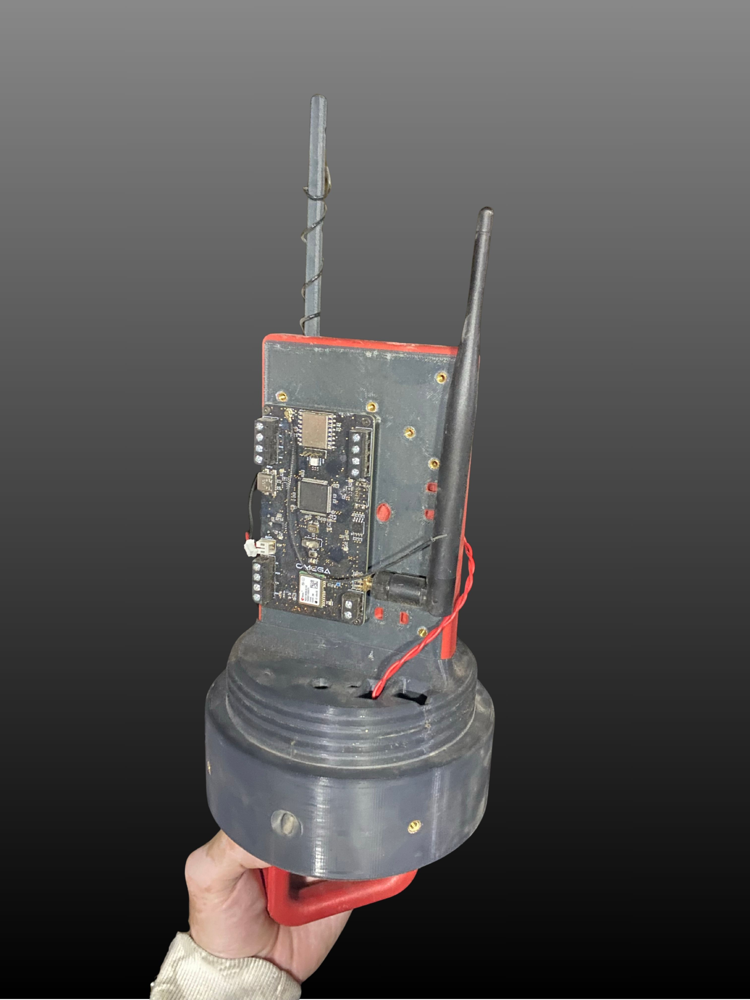
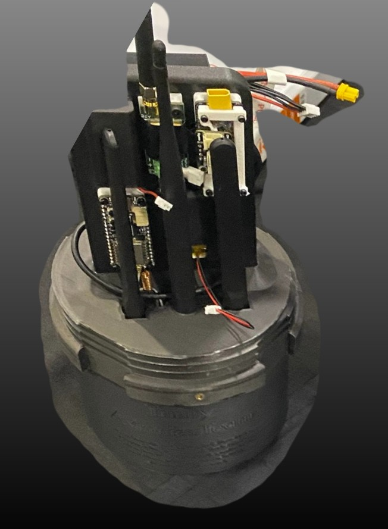
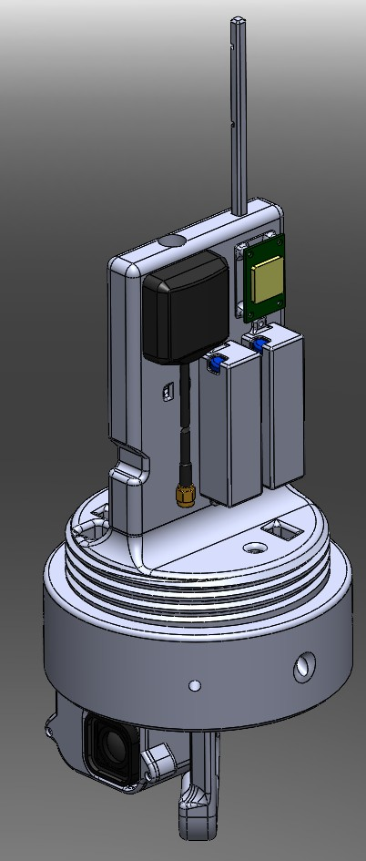
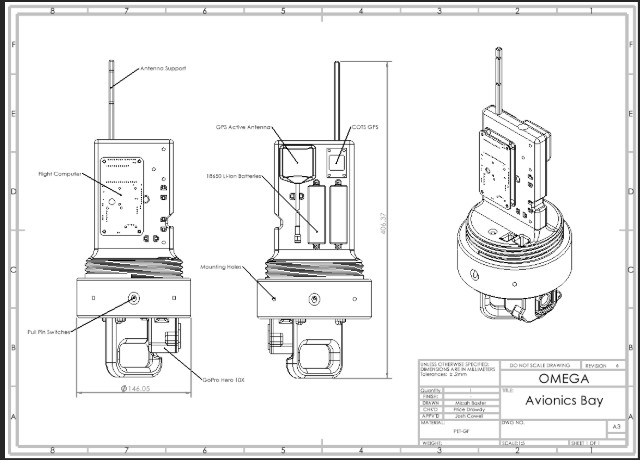
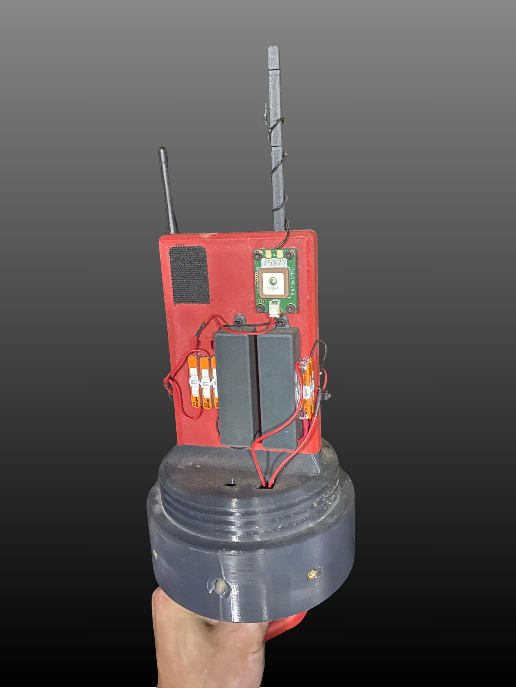

Engineering Challenge
Last year's communication systems suffered from RF signal interference resulting from several possible sources. This called for a redesign of avionics systems this year. All components on the LORA mesh network were moved to the fiberglass nosecone section which allows RF transparency and reduced the number of needed antennas. The previous year's nosecone avionics bay was very cluttered with antennas and components which made it difficult to maintain and repair.

The image above shows the previous year's nosecone avionics bay.
The Solution & Iterative Design
With the added components and reduced antennas the bay was redesigned to fit all of the necessary components in a more efficient and maintainable layout, following a siimilar redesign approach as seen in the Trinity Avionics Bay for wire management, and using pull pins to activate the GoPro and Custom Flight Computer.


The final SolidWorks model and drawing are shown above.

Both sides of the wired physical model used in the IREC Omega rocket are shown above.
Flight Performance & Results
Unfortunate circumstances meant that we could not use the previously planned for 433 Mhz Yagi antennas for telemetry purposes. The night before our competition launch backup antennas were swapped onto the avionics bay. At competition we were able to borrow a 433 Mhz Yagi antenna from another team, but had to move to the forward telemetry position to get GPS lock on the rocket, which is required for launch. We also started running into an issue where one of the USB-C ports on the Custom Flight Computer which connected to the GoPro was popping off. After soldering it twice before competition it was able to give the GoPro the necessary power on and off command, but when being drug across the desert floor by high winds, popped back off and was found disconnected. The flight computer also somehow had its physical boot switch turned on, which caused the flight computer to not boot properly when pull pins were removed, so no telemetry data was received on the ground station. Data was, however, logged to a physical SD drive so all flight data was preserved. Further steps are being taken to address the issues encountered.